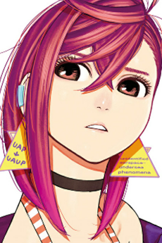

Momo ayase
PotagonistaMomo ayase
Dopo aver stretto amicizia con Ken Takakura, che lei chiama "Occultino" (perché rifiuta di chiamarlo con lo stesso nome dell'attore che idolatra), Momo desidera aiutare a riportare il suo corpo alla normalità dopo essere stata maledetta da uno yokai e deve superare altre attività paranormali in cui è coinvolta.